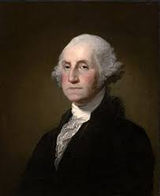

The first president of the United States of America
section heading- title/content
George Washington – first American president, commander of the Continental Army, president of the Constitutional Convention, and gentleman planter. Learn more about the many varied roles that George Washington excelled in and tremendous legacy that he left for America and the World.
